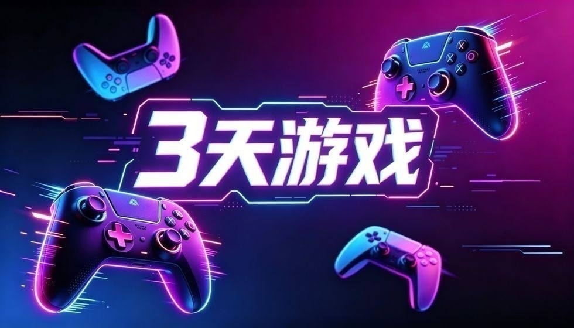

福布斯开炮！索尼遭遇20年最大丑闻，玩家怒了

就在昨天，《福布斯》杂志突然向索尼放了一记重磅手雷！作为游戏圈的老牌巨头，索尼这20年来虽有起伏，却从没被权威媒体如此直接“开炮”。号称20年最大丑闻，到底让玩家愤怒的是哪件事？是游戏质量滑坡，还是对待玩家的态度出了问题？
过去的索尼在玩家心里，那可是“神一般”的存在。《战神》里霸气的奎托斯，《最后生还者》细腻的剧情，不少玩家当初就为了这些独占游戏，心甘情愿掏出几千块买PS主机。可谁能想到，曾经让玩家疯狂追捧的品牌，如今却因为这场丑闻陷入争议。大家对索尼的态度，也慢慢从盲目崇拜变成了冷静审视——毕竟再喜欢，也不能容忍被“糊弄”。
这次《福布斯》曝光的丑闻之所以被称作“20年最大”，关键就在于戳中了玩家最在意的“信任”二字。索尼近期在游戏服务和内容承诺上的一系列操作，让不少老玩家觉得自己被“背刺”：之前承诺的福利缩水，说好的优化迟迟不到位，遇到问题时的回应还很敷衍。其实玩家不怕厂商犯错，怕的是犯错后还摆出傲慢的姿态。现在大家讨论的重点早不是索尼这次亏了多少、财报数据好不好看，而是“我们还能相信这个品牌吗”。这种信任的崩塌，比任何亏损都更让索尼难受。
索尼的这场危机，也给整个游戏行业提了个醒。不管多大多强的巨头，都不能把玩家的热爱当“理所当然”。厂商和玩家之间从来不是简单的“买卖关系”，而是基于信任的双向奔赴。一旦打破这份信任，再响亮的招牌也会慢慢失去光泽。毕竟玩家的眼睛是雪亮的，你对游戏用心、对玩家尊重，大家自然愿意支持；可要是只想着赚快钱，忽视玩家的感受，最终只会被市场抛弃。
当巨头犯错谁来买单？你觉得游戏公司最该尊重谁？要知道，在这个时代，没有永远的朋友，只有永远的利益与信任——而对游戏公司来说，玩家的信任，才是最该守护的利益。
关于我们
📱 公众号名称：三天游戏
✍️ 作者：曾三天
扫码关注公众号，获取每日最新资讯

商务合作与版权
商务合作 / 内容投稿 / 品牌推广
请关注公众号「三天游戏」后台留言联系
版权声明：本文由作者整理，转载需注明出处。